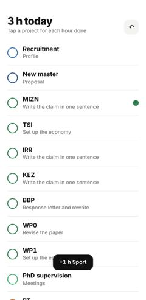
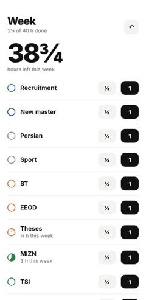
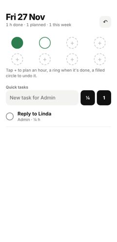
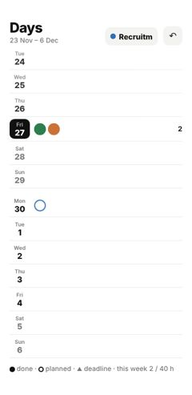
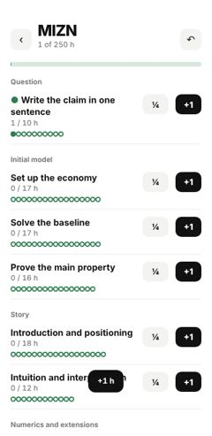
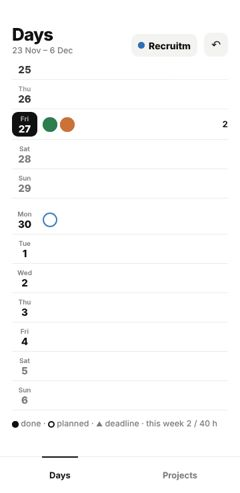
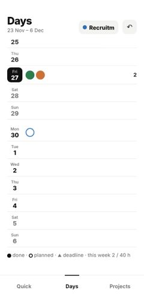
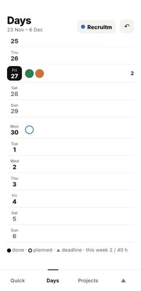
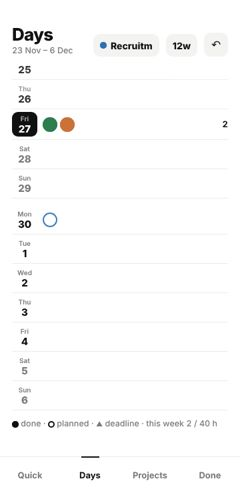
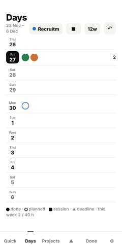

Ten complete versions of Hours, from one tap to lean full. Each copies your Hours data on first open, then keeps its own.

01One tapNothing but logging. Tap a project when you've done an hour on it. Undo if you slip.
02WeekOne number: hours left this week. Log in quarters or hours, and see each project's next ▲.
03TodayOnly today: eight circles to plan and tick, plus your quick tasks.
04DaysOnly the two-week grid: circles done, rings planned, squares for sessions, ▲ for deadlines.
05ProjectsOnly your projects and their tasks. Log on the task itself; ▲ shows what's due.
06Two tabsDays and Projects. Plan and log in Days; see where each project stands.
07Three tabsQuick, Days and Projects: capture small things, plan and log hours, follow projects.
08DeadlinesThree tabs plus ▲: set deadlines on tasks and see which ones will not fit.
09Four tabsAdds looking back: Done by period and category, and your weekly budget.
10Lean fullEverything, kept lean: Quick, Days with sessions and 12 weeks, Projects you can edit, ▲, Done, Settings with backup.